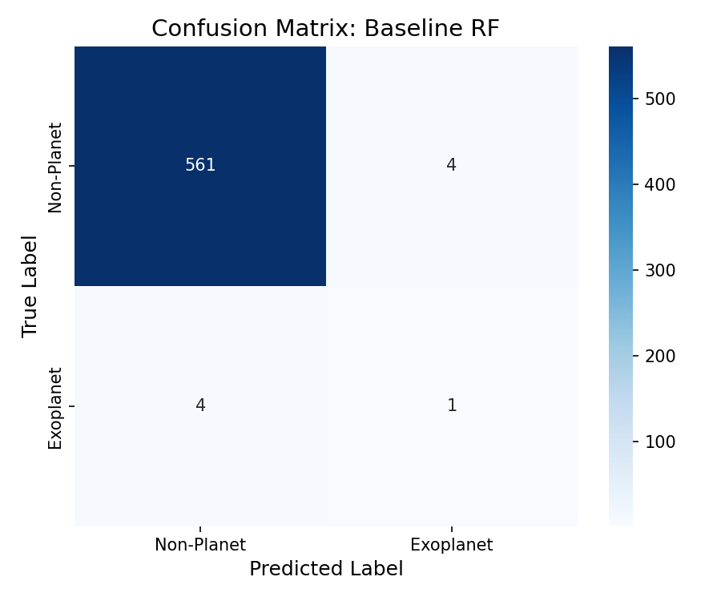
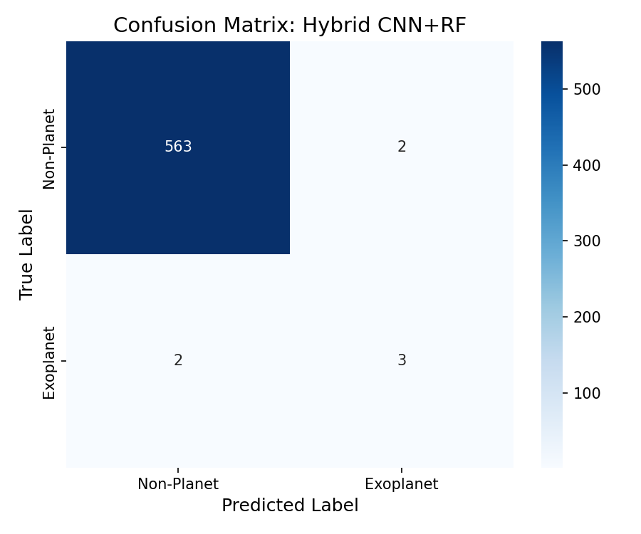
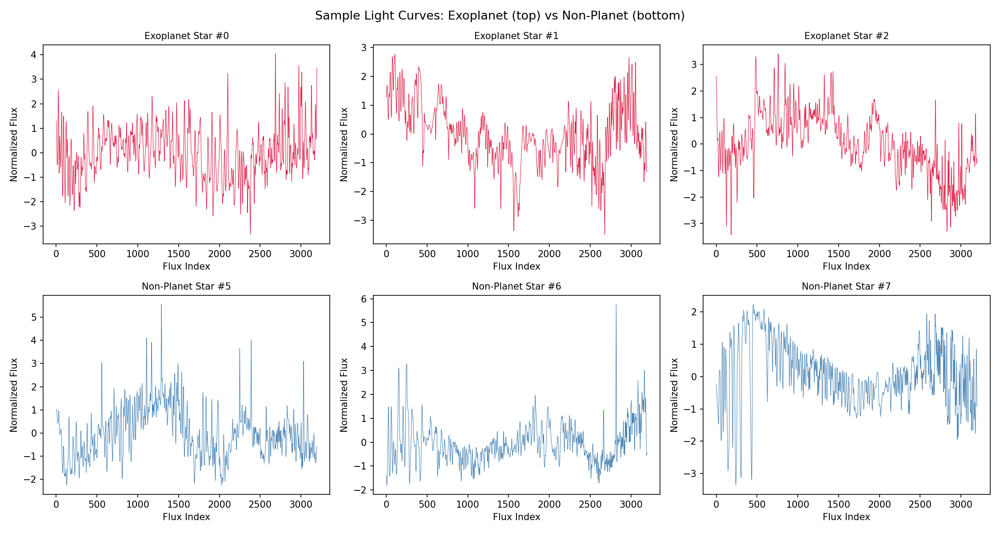

Abstract
A hybrid framework in which a 1D Convolutional Neural Network performs automatic feature learning directly from raw Kepler flux time-series (~3,198 measurements per observation), eliminating manual feature design. Extracted deep representations are transferred to a Random Forest classifier, combining temporal pattern recognition with ensemble robustness and interpretability. SMOTE is applied post train-validation split to address class imbalance without data leakage, evaluated using PR-AUC and F1-Score — metrics chosen for severely imbalanced astronomical classification.
Pipeline Overview
Results: Model Comparison
| Metric | Baseline RF | Hybrid CNN+RF | Δ |
|---|---|---|---|
| Precision | 0.2000 | 0.6000 | ↑ 3× |
| Recall | 0.2000 | 0.6000 | ↑ 3× |
| F1-Score | 0.2000 | 0.6000 | ↑ 3× |
| PR-AUC | 0.1011 | 0.5425 | ↑ 5.4× |
| ROC-AUC | 0.9437 | 0.8782 | ↓ 0.93× |
| MCC | 0.1929 | 0.5965 | ↑ 3.1× |
| Accuracy | 0.9860 | 0.9930 | ↑ 1.0× |
Results: Ablation Study
| Variant | Precision | Recall | F1 | PR-AUC |
|---|---|---|---|---|
| CNN-only (no RF) | 0.6667 | 0.4000 | 0.5000 | 0.3302 |
| PCA(64) + RF (fair baseline) | 0.0000 | 0.0000 | 0.0000 | 0.0497 |
| CNN + RF Hybrid (proposed) | 0.6000 | 0.6000 | 0.6000 | 0.5425 |
Bootstrap 95% CI (1000 resamples, n=5 test positives): Hybrid F1 = 0.60 [0.00, 1.00], PR-AUC = 0.54 [0.02, 1.00], MCC = 0.60 [−0.003, 1.00]. Wide intervals reflect the statistical fragility of 5 test positives.
Cross-Validation Stability
| Fold | Precision | Recall | F1 | PR-AUC | ROC-AUC | MCC |
|---|---|---|---|---|---|---|
| 1 | 0.1818 | 0.6667 | 0.2857 | 0.1028 | 0.8784 | 0.3404 |
| 2 | 0.1250 | 0.3333 | 0.1818 | 0.0515 | 0.8457 | 0.1953 |
| 3 | 0.2857 | 0.8571 | 0.4286 | 0.2114 | 0.9862 | 0.4888 |
| 4 | 0.3750 | 0.5000 | 0.4286 | 0.3591 | 0.9854 | 0.4285 |
| 5 | 0.5000 | 0.6667 | 0.5714 | 0.5273 | 0.9839 | 0.5740 |
| Mean ± Std | 0.2935 ± 0.15 | 0.6048 ± 0.20 | 0.3792 ± 0.15 | 0.2504 ± 0.19 | 0.9359 ± 0.07 | 0.4054 ± 0.15 |
Visualizations




Limitations
The Kepler dataset contains only 37 confirmed exoplanet observations (5 in the test set), making point metrics statistically fragile — bootstrap confidence intervals span nearly the full [0, 1] range. Cross-validation F1 varies from 0.18 to 0.57 across folds, reflecting high sensitivity to which few positives appear in each split. SMOTE-generated synthetic training samples may not capture the full diversity of real transit morphologies. The pipeline has been validated exclusively on Kepler photometry and has not been tested on TESS, K2, or ground-based survey data. These constraints are inherent to the dataset scale, not the architecture, and would be mitigated by a larger confirmed exoplanet pool.